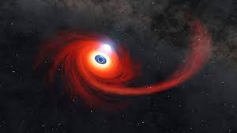

Embark on a celestial journey as the night sky unveils its breathtaking wonders. Our webpage invites you to explore the enchanting tapestry of stars, planets, and the moon. Immerse yourself in the tranquility of the cosmic canvas, where constellations tell ancient stories and meteors leave fleeting traces of brilliance. Join us in celebrating the beauty of the night sky, a timeless spectacle that inspires awe and sparks a connection to the limitless wonders of the universe.
| Stars | Luminous celestial objects composed mostly of hydrogen and helium, such as our Sun and distant suns in other galaxies |
| Planets | Large, non-stellar celestial bodies that orbit stars. Examples include Earth, Mars, Jupiter, and Saturn |
| Moon | Earth's natural satellite, reflecting sunlight to create varying phases as it orbits our planet |
| Asteroids | Small rocky bodies that orbit the Sun, primarily found in the asteroid belt between Mars and Jupiter |
| Comets | Icy bodies that develop a bright, glowing coma and a tail when they approach the Sun |
| Galaxies | Vast systems of stars, gas, dust, and dark matter bound together by gravity. The Milky Way is an example of a galaxy |
| Nebula | Large, diffuse clouds of gas and dust in space, often illuminated by nearby stars |
| Satellites | Artificial objects placed in orbit around celestial bodies, such as Earth's artificial satellites |
| Black Holes | Extremely dense regions in space where gravity is so intense that nothing, not even light, can escape |